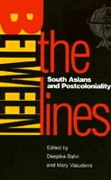

Intense and sometimes contentious debates about South Asian identity
Intense and sometimes contentious debates about South Asian identity


 Intense and sometimes contentious debates about South Asian identity
Intense and sometimes contentious debates about South Asian identity

|  |
Between the LinesSouth Asians and Postcolonialityedited by Deepika Bahri and Mary Vasudevapaper EAN: 978-1-56639-468-0 (ISBN: 1-56639-468-6) |
This ground-breaking collection of new interviews, critical essays, and commentary explores South Asian identity and culture. Sensitive to the false homogeneity implied by "South Asian," "diaspora," "postcolonial," and "Asian American," the contributors attempt to unpack these terms. By examining the social, economic, and historical particularities of people who live "between the lines"—on and between borders—they reinstate questions of power and privilege, agency and resistance. As South Asians living in the United States and Canada, each to some degree must reflect on the interaction of the personal "I," the collective "we," and the world beyond.
The South Asian scholars gathered together in this volume speak from a variety of theoretical perspectives; in the essays and interviews that cross the boundaries of conventional academic disciplines, they engage in intense, sometimes contentious, debate.
Excerpt available at www.temple.edu/tempress
"an important and valuable study as it engages in a discourse which pushes beyond simplistic meanings and complacent acceptance of complex terms like 'postcolonial' and 'South Asian.'"
—MELUS
Acknowledgments
1. Introduction – Deepika Bahri and Mary Vasudeva
Part I: Interviews
2. Observing Ourselves among Others, Interview with Meena Alexander – Deepika Bahri and Mary Vasudeva
3. Pedagogical Alternatives: Issues in Postcolonial Studies, Interview with Gauri Viswanathan – Deepika Bahri and Mary Vasudeva
4. Transnationality and Multiculturalist Ideology, Interview with Gayatri Chakravorty Spivak – Deepika Bahri and Mary Vasudeva
Part II: Commentaries
5. African-Americans and the New Immigrants – Amritjit Singh
6. Life at the Margins: In the Thick of Multiplicity – M.G. Vassanji
7. Mullahs, Sex, and Bureaucrats: Pakistan's Confrontations with the Modern World – Sohail Inayatullah
8. Coming to Terms with the "Postcolonial" – Deepika Bahri
Part III: Studies in the Media and Popular Culture
9. An Explosion of Difference: The Margins of Perception in Sammy and Rosie Get Laid – Ranita Chatterjee
10. Emigrants Twice Displaced: Race, Color, and Identity in Mira Nair's Mississippi Masala – Binita Mehta
11. From Ritual Drama to National Prime Time: Mahabharata, India's Televisual Obsession – Sanjoy Majumder
12. Television, Politics, and the Epic Heroine: Case Study, Sita – Mahasveta Barua
Part IV: Literary Criticism
13. Replacing the Colonial Gaze: Gender as Strategy in Salman Rushdie's Fiction – Sukeshi Kamra
14. Style Is (Not) the Woman: Sara Suleri's Meatless Days – Samir Dayal
15. Redefining the Postcolonial Female Self: Women in Anita Desai's Clear Light of Day – Pushpa Naidu Parekh
16. "Luminous Brahmin Children Must Be Saved": Imperialist Ideologies, "Postcolonial" Histories in Bharati Mukherjee's The Tiger's Daughter – Indrani Mitra
17. The Troubled Past: Literature of Severing the Viewer/Viewed Dialectic – Huma Ibrahim
Part V: Experimental Critiques
18. Jane Austin in Meerut, India – Amitava Kumar
19. Border Crossings: Retrieval and Erasure of the Self as Other – Shantanu DuttaAhmed
20. I see the Glass as Half Full – Uma Parameswaran
About the Contributors
Deepika Bahri is Assistant Professor of Postcolonial Literature and Theory at Emory University.
Mary Vasudeva is on the Board of Directors for the Academic Excellence Foundation at Bowling Green State University.
Contributors: Meena Alexander, Gauri Viswanathan, Gayatri Chakravorty Spivak, Amritjit Singh, M. G. Vassanji, Sohail Inayatullah, Ranita Chatterjee, Benita Mehta, Sanjoy Majumder, Mahasveta Barua, Sukeshi Kamra, Samir Dayal, Pushpa Naidu Parekh, Indrani Mitra, Huma Ibrahim, Amitava Kumar, Shantanu DuttaAhmed, Uma Parameswaran.
Asian American Studies
Race and Ethnicity
Asian Studies
Asian American History and Culture, edited by K. Scott Wong, Linda Trinh V�, and Cathy Schlund-Vials.
Founded by Sucheng Chan in 1991, the Asian American History and Culture, series has sponsored innovative scholarship that has redefined, expanded, and advanced the field of Asian American studies while strengthening its links to related areas of scholarly inquiry and engaged critique. Like the field from which it emerged, the series remains rooted in the social sciences and humanities, encompassing multiple regions, formations, communities, and identities. Extending the vision of founding editor Sucheng Chan and emeriti editor Michael Omi and David Palumbo-Liu, series editors K. Scott Wong, Linda Trinh V�, and Cathy Schlund-Vials continue to develop a foundational collection that embodies a range of theoretical and methodological approaches to Asian American studies.
© 2015 Temple University. All Rights Reserved. This page: http://www.temple.edu/tempress/titles/1172_reg.html.